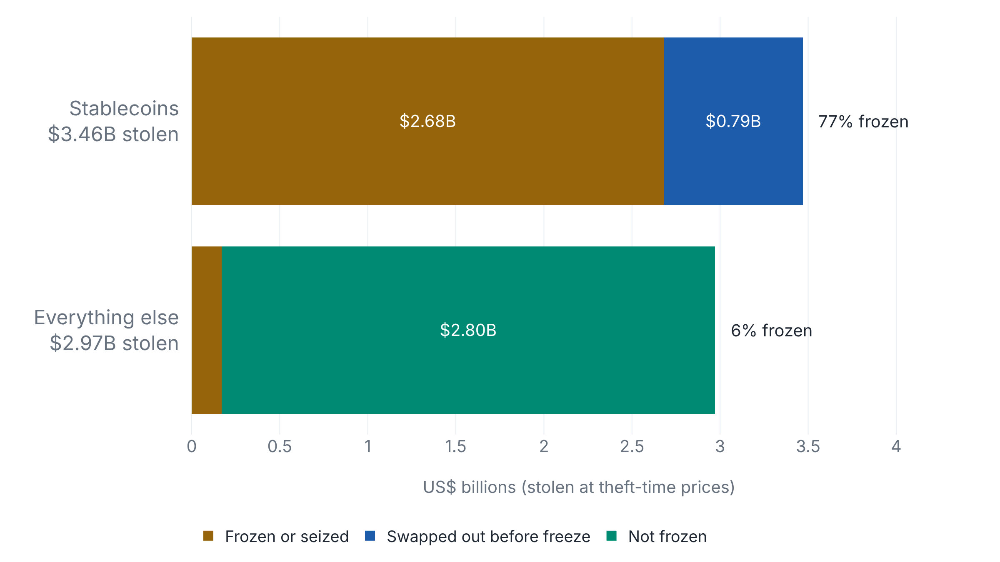
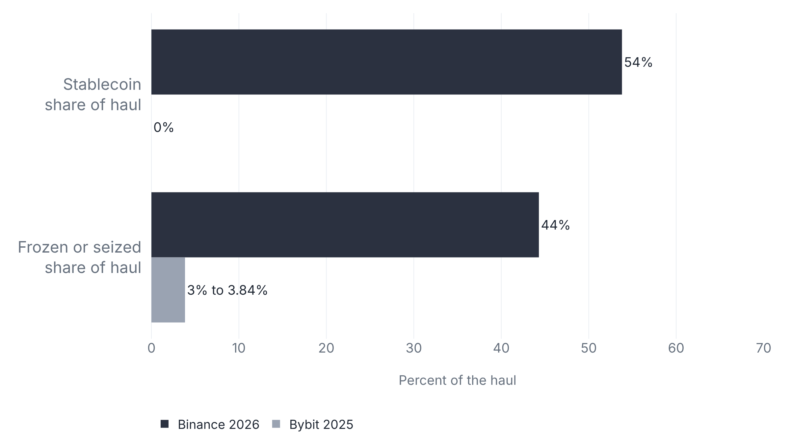

Tether and Circle froze Binance’s stolen stablecoins and had no reach over the rest
Elliptic counts 44% of the $6.43 billion as frozen or seized, almost all of it stablecoin, where Bybit’s 2025 haul held no stablecoin and saw 3% to 3.84% frozen.
Over half the haul had an issuer to call
A freeze reaches only tokens that have an issuer, and only those the thief has not yet swapped out. About $6.3 billion left Binance’s wallets on 29 October by Binance’s estimate, $6.36 billion by TRM Labs’ trace and $6.43 billion by Elliptic’s.123 Most moved in about 20 minutes from 20:05 UTC.2 Elliptic counts $3.46 billion of its total as stablecoin.3
The frozen tally runs from about $2.7 billion (TRM, 30 October) to $2.85 billion (Elliptic, 1 November) to about $3 billion (Binance, method unstated).231 All are days old and still moving. Frozen is not returned: Binance says it is working with partners and law enforcement to recover the frozen assets, and CoinDesk reports none returned.45
Only an administrator can flag an address
A stablecoin contract keeps a blocklist and checks it on transfers, so a
listed address cannot move its balance. Tether’s
USDT on Ethereum gives its owner addBlackList and
destroyBlackFunds, which also sets a blacklisted balance
to zero.6 Circle’s USDC restricts
blacklist to a designated blacklister.7 Tether
froze the main Ethereum wallet 37 minutes after the USDT arrived, and
Circle froze 823 million USDC three minutes after that.3
Nothing stolen on Bitcoin, the XRP Ledger, Solana or NEAR has been frozen, Elliptic reports, because native assets have no issuer that can freeze them.3 The dividing line is whether anyone administers the asset. Arbitrum’s Security Council moved, and Optimism’s governance appears to have moved, about $36 million of ETH, ARB and OP out of the attacker’s reach, and Binance froze its own WBETH.3 Circle did not freeze about $230 million of USDC from April’s Drift exploit and says it freezes only when legally compelled. A Circle spokesperson told American Banker the company froze more than $1.1 billion for Binance, which no on-chain count reproduces: TRM and Elliptic find $823 million to $825 million.823
Most stablecoins froze before the thief could swap them
Read each bar of Fig. 2 from the left: frozen, then swapped out before the freeze, then out of any issuer’s reach.

Before the freezes landed, the attacker converted about $786 million of stablecoins into ETH and TRX, including 434 million USDT into 160,451 ETH at a 12% to 26% loss against market.3 About 77% of the stolen stablecoin ended up frozen, against about 6% of everything else. The issuers froze nearly all the stablecoin still in place when they acted, so the gap came from speed as well as from the asset model.
Bybit’s haul held no stablecoin for an issuer to freeze
The FBI put the 2025 Bybit theft at approximately $1.5 billion.9 Block Scholes read the haul from the chain as 401,347 ETH, 90,376 stETH, 8,000 mETH and 15,000 cmETH, about $1.46 billion, with no stablecoin.10 Bybit’s CEO Ben Zhou counted 3.84% frozen on 21 April 2025, as Decrypt reported,11 up from 3% in early March. Block Scholes found no freeze of the stolen ETH in its 22 February update, and no source says what the 3.84% consists of.

Two thefts are not a rule, but the mechanism in Fig. 1 predicts the order. The haul with an issuer behind 54% of it saw 44% frozen or seized, and the haul with none saw under 4%.
Binance has walked back its breach path, and the attributions are assessments
Binance’s initial finding, posted by co-CEO Richard Teng on 30 October, was that the incident “may have started with a compromised DevOps engineer’s laptop.” The laptop, he wrote, gave an attacker access to a service container, where they submitted unauthorized withdrawal transactions.12 About 70 minutes later Binance said its later investigation “has uncovered additional points of breach” and did not name them.13 TRM’s assessment is that the attacker compromised Binance’s hot wallet signing infrastructure, and it says the early phishing hypothesis “covers Ethereum and leaves the other chains unexplained.”2
| Holder | Assessment | Stated confidence |
|---|---|---|
| TRM Labs | TraderTraitor, North Korea’s elite hacking unit.2 | “high confidence” |
| Binance | “Our investigation has not attributed responsibility to any individual.”12 | none given |
| Chainalysis | “likely done by DPRK group TraderTraitor due to links to previous hack.”14 | “likely” |
| Elliptic | Linked the theft to TraderTraitor before the FBI spoke.3 | “likely” |
| FBI | North Korea “was responsible for the theft of more than $6 billion”; 628 addresses to block. Quoted by BleepingComputer; the FBI’s own page could not be opened.15 | an attribution |
| North Korea | Has denied such thefts before and did not respond to Reuters here, per IBTimes.16 | denial |
Whoever is named in the end, Elliptic counts about $3.25 billion that no issuer can freeze, at 1 November prices, across more than 800 addresses. That is $1.42 billion in BTC, $1.32 billion in ETH and $502 million in XRP, Solana, TRX, NEAR and others.3
Sources
- Binance · Security Incident Update
- TRM Labs · North Korea steals $6.36 billion from Binance
- Elliptic · Binance: the largest hack in history
- Binance · X post on frozen assets
- CoinDesk · Binance opens withdrawals in phases
- Blockscout · Tether USDT contract
- Circle · stablecoin-evm, Blacklistable.sol
- American Banker · $6B Binance heist provokes stablecoin freeze dilemma
- FBI IC3 · $1.5 Billion Bybit Hack
- Block Scholes · Bybit ETH hack
- Decrypt · Bybit CEO on traceable funds
- Richard Teng · X post
- Binance · X post, additional points of breach
- Jonathan Levin · X post
- BleepingComputer · FBI links Binance heist to North Korea
- IBTimes · FBI and the Binance theft